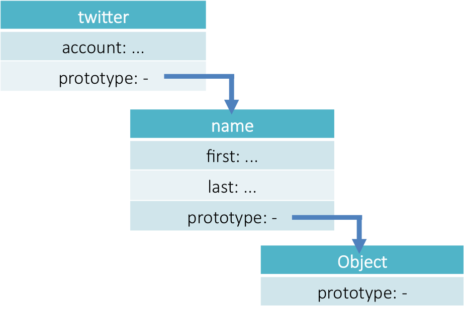

Modern JavaScript Development
Henk Bakker (Team Fiscal Savings)
"JavaScript is to Java as hamster is to ham"
by Jens Ohlig
Why JavaScript
How it all started
The Birth of JavaScript
The ancestors of JavaScript
- Functions (Lamda)
- Lexical Scope
- Loosely Typed
- Prototypal Inheritance
- Dynamic Objects
- Syntax
- Some conventions
- Name (part)

Did you mean ECMAScript
- 1996 – First public release
- 1999 – Becomes standard ECMA-262 as ECMAScript 3
- 2009 – Major update ECMAScript 5
- 2011 – Last review ECMAScript 5.1 (ISO/IEC 16262:2011)
- WIP* – Next version ECMAScript 6
* Work In Progress
"JavaScript is the only language people feel like they don't need to learn to use it"
by Douglas Crockford
Back to the Basics
JavaScript building blocks
Functions
- Functions are first-class objects (citizen)
-
- Can be created at runtime
- Can be stored in variables
- Can be passed as parameters to functions
- Can be returned by functions
- Can be expressed as anonymous literals
Functions 2
//function definition (global)
function greet(name) {
return 'hello ' + name;
}
//anonymous function expression
var greet = function (name) {
return 'hello ' + name;
};
//named function expression
var greet = function greet(name) {
return 'hello ' + name;
};
//passed as argument
var surround = function (func, name) {
return '(' + func(name) + ')';
}
// returned
var makeGreet = function () {
return function (name){
return 'hello' + name;
};
};Scope
- No block-level scope
- Lexical Scoping
- Function
- Global
- Scope chain
Scope 2
var foo = function () {
var a = 3, b = 5;
var bar = function () {
var b = 7,
c = 11;
a += b + c;
//a: 21, b: 7, c: 11
};
//a: 3, b: 5
bar();
//a: 21, b: 5
};Dynamic Scope
Where the scope of the parent function in which an inner function is defined can be mutated at run-time.
function g() {
document.writeln("global");
}
function f(cond) {
if (cond) {
function g() {
document.writeln("inner");
}
}
g(); // "inner" when cond, "global" when !cond
}Hoisting
Declaration is moved to the top of the scope
Also for function declaration
var foo = 'hi!';
var bar = function () {
document.writeln(foo); //undefined
var foo = 'hello!';
document.writeln(foo); //hello!
};
bar();Is the same as:
var foo = 'hi!';
var bar = function () {
// single var -> the good parts
var foo;
document.writeln(foo); //undefined
foo = 'hello!';
document.writeln(foo); //hello!
};
bar();Closure
Inner function get access to variables and parameter of parent function
Variables, not values
var foo = function (arg) {
var bar = 'baz';
return {
getBar: function () {
return bar + arg;
}
};
};
document.writeln(foo('!').getBar());
//print: baz!Objects
JavaScript is fundamentally about objects
- Arrays are objects
- Functions are objects
- Objects are objects
Objects 2
var bar = {
name: {
first: 'Henk',
last: 'Bakker'
},
age: 21,
active: true,
twitter: function () {
var n = this.name;
return '@' + n.first + n.last;
},
tags: ['js', 'web', 'abn']
};So what are objects?
Objects are collections of name-value pairs (properties)
Objects
//Object are dynamic
var person = {};
//set operations
person.name = 'henk';
person['surname'] = 'bakker';
//get operations
var n = person.name = 'henk';
var s = person['surname'] = 'bakker';
var a = person.age || "not set"; //safe
//delete operations
delete person.surname;
//enumeration
var prop;
for (prop in person) {
document.writeln(prop + ':' + person[prop]);
} // print: name:henk
//methods
person.say = function (word) {
return word + ' ' + this.name;
};
document.writeln('hello');Prototype
Linkage feature that allows one object to inherit the properties of another
var name = {
first: 'henk',
last: 'bakker'
};
var twitter = Object.create(name);
twitter.account = function () {
return '@' + this.first + this.last;
};
document.writeln(twitter.account());
// print: @henkbakkerPrototype 2
Prototype 3

Context (this)
- 'This' represents the context object
- Determined by the invocation pattern
- Method invocation
- Function invocation
- Constructor invocation
- Apply invocation
Context (this) 2
//function invocation
var sum = function (a, b) {
return a + b;
};
//this is bound to the global object
var value = sum(1, 2);
//method invocation
var foo = {
value: 0,
increment: function (inc) {
this.value += inc;
}
};
//this is bound to foo
foo.increment(2);Context (this) 3
//constructor invocation
var Foo = function (string) {
this.bar = string;
};
//this is bound to the new object
var one = new Foo('one');
var two = new Foo('two');
//apply invocation
var foo = {
value: 0
};
var increment = function (inc) {
this.value += inc;
};
//this is bound to the first param
increment.apply(foo, [1]);Object Way
Object Oriented Programming and JavaScript
Object Creation
JavaScript provides several different ways to create an object
- Object literal
- Constructor function
- Object create
Object Literal
- When we need only one object of some kind
- Reduce a large number of parameters Collect settings
var makePerson = function () {
var settings = {
say: 'hallo',
name: 'sir'
};
var greeting = function (spec) {
return spec.say || settings.say + ' ' + spec.name || settings.name;
};
return {
greeting: greeting
}
};
var p = makePerson();
var result = p.greeting({name: 'henk'});
//result: hello henkConstructor Function
- When we need many independent instance of some object
- Add constructor logic
- Reduce memory allocation
var Person = function (name) {
this.name = name;
//bad: redefined for each new object
this.toString = function () {
return 'I am ' + this.name;
}
};
//good: defined one time for all objects
Person.prototype.greeting = function (say) {
return say + ' ' + this.name;
};
var p1 = new Person('henk');
var p2 = new Person('jan');
var result1 = p1.greeting('hi');
var result2 = p2.toString();
//result1: hi henk
//result2: I am janECMAScript 5
- Creating an object without going through its constructor
- Better object’s properties specification
var Person = Object.create(Object.prototype);
Person.prototype = {
greeting: function (say) {
return say + ' ' + this.name;
}
};
var p = Object.create(Person.prototype, {
name: {
writeble: true,
configurable: true,
value: 'henk'
}
});
var result = p.greeting('hi');
//result: hi henkInformation hiding
JavaScript does not offer accessibility levels (public, private, etc.) on members
This does not mean that JavaScript objects can’t have private members
var foo = {
names: ['one', 'two', 'three'],
digit_name: function (n) {
return this.names[n];
}
};
//remove 'three' aka change
//internal state, very very bad!@!
foo.names.splice(2, 1);
document.writeln(foo.digit_name(2));
//print: undefinedInformation hiding 2
The array will be created each time the function is invoked
//private but slow
var digit_name = function (n) {
var names = ['one', 'two', 'three'];
return names[n];
};
var foo = {
digit_name: digit_name
};
document.writeln(foo.digit_name(2));
//print: threeInformation hiding 3
We can use functions and closure to make modules.
A module is a function or object that presents an interface but that hides its state and implementation.
Also known as: Module Pattern
//private and fast, thank's to immediate functions and closure
var digit_name = (function () {
var names = ['one', 'two', 'thee'];
return function (n) {
return names[n];
};
})();
var foo = {
digit_name: digit_name
};
document.writeln(foo.digit_name(2));
//print: threeInheritance (Pseudoclassical)
- Objects produced by constructor functions
- The prototype object is the place where inherited traits are to be deposited
- Create an object whose prototype is Function’s prototype and initialize it executing Function
Inheritance (Pseudoclassical) 2
var Car = function (speed) {
this.speed = speed;
};
Car.prototype.accelerates = function (level) {
this.speed += level;
};
//supercar inherit from car
var Supercar = function (speed, power) {
this.speed = speed;
this.power = power;
};
Supercar.prototype = Object.create(Car.prototype);
Supercar.prototype.constructor = Supercar;
Supercar.prototype.boost = function () {
this.speed += this.power;
};
var s = new Supercar(3, 100);
s.accelerates(5);
s.boost();
document.writeln(s.speed);
//print: 108"Favor object composition over class inheritance"
by Erich Gamma (GoF)
Inheritance (Prototypal)
- JavaScript natual way
- Class-free
- Objects inherit from objects (Delegation)
- Customizing the new one (Differential Inheritance)
- Officially a part of the language (ECMAScript 5)
Inheritance (Prototypal) 2
var car = {
speed: 0,
accelerates: function (level) {
this.speed += level;
}
};
//supercar inherit from car
var supercar = Object.create(car);
supercar.boost = function () {
this.accelerates(100);
};
car.accelerates(2);
supercar.boost();
document.writeln(car.speed, ' ', supercar.speed,
' ', supercar.hasOwnProperty('accelerates'));
//print: 2 102 falseInheritance (Copy)
- The easiest way
- Objects inherit from objects (Shallow/Deep Copy)
Inheritance (Copy) 2
var extend = function (parent, child) {
var i, child = child || {};
for (i in parent) {
if (parent.hasOwnProperty(i)) {
child[i] = parent[i];
}
}
return child;
};
var car = {
speed: 0,
accelerates: function (level) {
this.speed += level;
}
};
//supercar inherit(copy) from car
var supercar = extend(car);
supercar.boost = function () {
this.accelerates(100);
};
car.accelerates(2);
supercar.boost();
document.writeln(car.speed, ' ', supercar.speed,
' ', supercar.hasOwnProperty('accelerates'));
//print: 2 100 falseInheritance (Mixins)
- Simulate multi-inheritance
- Objects inherit from many objects (Shallow/Deep Copy)
Inheritance (Mixins)
var mixin = function () {
var arg, prop, child = {};
for (arg = 0; arg < arguments.length; arg += 1) {
for (prop in arguments[arg]) {
if (arguments[arg].hasOwnProperty(prop)) {
child[prop] = arguments[arg][prop];
}
}
}
return child;
};
var car = {
speed: 0,
accelerates: function (level) {
this.speed += level;
}
};
var person = {name: 'a'};
//supercar inherit(copy) from car
var supercar = mixin(car, person);
supercar.name = 'supercar';
supercar.accelerates(3);
document.writeln(car.speed, ' ', supercar.name, ' ', supercar.speed);
//print: 0 supercar 3